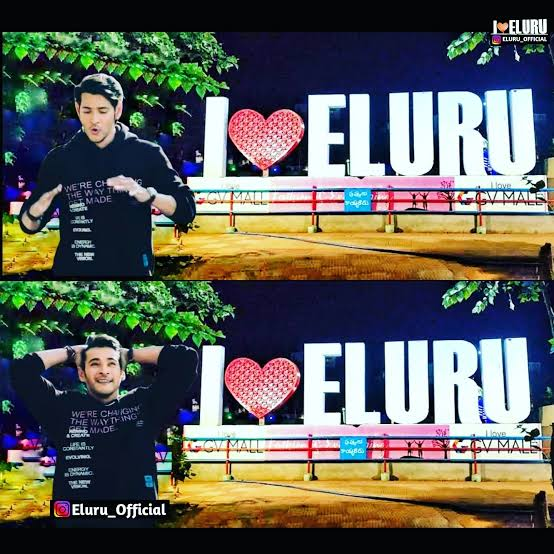

About me
I'm JanardhanSai from Eluru Andhra Pradesh, I am working as Application Developer in Westlisoft Technologies at Hyderabad.
Skills
Interests
My Peace
Temple

Movie Theatre

About My HomeTown
ELURU is a city and the district headquarters of Eluru district in the Indian state of Andhra Pradesh. It is one of the 14 municipal corporations in the state and the mandal headquarters of Eluru mandal in the Eluru revenue division. The city is on the Tammileru river. The city is well known for its wool-pile carpets and hand woven products. As of 2011 Census of India, the city had a population of 214,414. Its history dates back to the second century CE.
